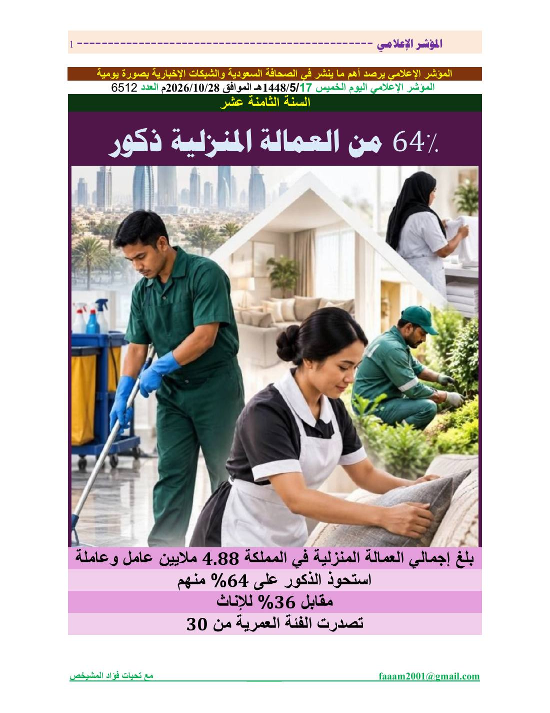
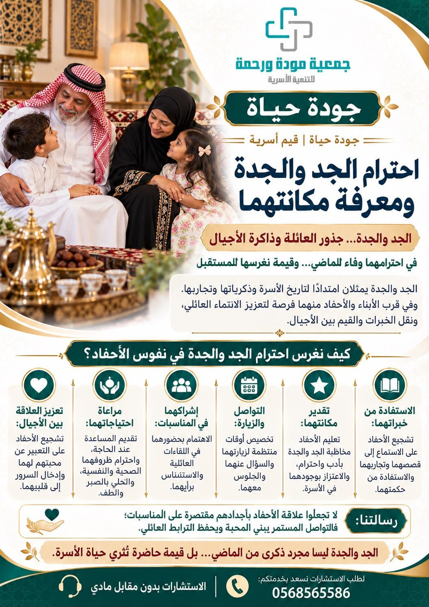

فؤاد المشيخص
مؤسس المؤشر الإعلامي · كاتب ومهتم بالشأن الاجتماعي والأسري
ثمانية عشر عاماً من الرصد اليومي لما تنشره الصحافة السعودية والشبكات الإخبارية، في عدد واحد يصلك كل صباح.

صدر حديثاًالمؤشر الإعلامي، العدد 6512
الخميس 17 جمادى الأولى 1448هـ، الموافق 28 أكتوبر 2026م. واحد وعشرون موضوعاً من الصحف السعودية والشبكات الإخبارية، لكل عنوان صفحته في العدد ورابط مصدره.
عناوين العدد
كل الأعداد في مكان واحد
أرشيف المؤشر عدداً بعد عدد، وفهرس بحثي يجمع عناوين الأعداد كلها. ابحث بكلمة مثل «النفط» أو «الأسرة» لتصل إلى الموضوع وصفحته.
| العدد | التاريخ | موضوع الغلاف | الصفحات | |
|---|---|---|---|---|
| 6512 | الخميس 1448/5/17هـ 2026/10/28م |
64% من العمالة المنزلية ذكور 21 موضوعاً |
33 |
كاريكاتير العدد
الصفحة الأخيرة من كل عدد مخصصة لكاريكاتير اليوم.
مقال المناسبة
مقال يرافق المناسبة العالمية أو الإقليمية أو الوطنية أو الاجتماعية. حين تتغير المناسبة ينتقل المقال تلقائياً إلى جدول «المناسبات المؤرشفة».
حضور في المجتمع والإعلام
أعمال المؤسس مع الجمعيات والمجلات الإلكترونية، مرتبة في أربعة أبواب.
جمعية مودة ورحمة للتنمية الأسرية
ندوات ومقالات وإضاءات توعوية في جودة الحياة الأسرية.

اضغط للتكبيراحترام الجد والجدة ومعرفة مكانتهما
الجد والجدة جذور العائلة وذاكرة الأجيال؛ في احترامهما وفاء للماضي وقيمة نغرسها للمستقبل. كيف نغرس احترامهما في نفوس الأحفاد؟
الجد والجدة ليسا مجرد ذكرى من الماضي… بل قيمة حاضرة تُثري حياة الأسرة.
القطيف اليومية
مجلة إلكترونية. مقالات مجدولة كسلسلة مرتبة.
كل مقال في السلسلة يظهر برقمه وعنوانه وأهم أفكاره. الصفوف أدناه توضّح الشكل فقط إلى أن تصل مقالاتك.
| الرقم | العنوان | أهم الأفكار |
|---|---|---|
| 1 | عنوان المقال الأول في السلسلة | الفكرة الأولى · الفكرة الثانية · الفكرة الثالثة |
| 2 | عنوان المقال الثاني | تُكتب هنا خلاصة المقال في سطرين |
| 3 | عنوان المقال الثالث | … |
مجلة الموروث الشعبي الإلكترونية
مملكة البحرين
المناسبات المؤرشفة
كل مناسبة انتهت تنتقل هنا بمقالها وصورها.
| التاريخ | المناسبة | نوعها | المقال |
|---|
عن المؤسس
تُعرض السيرة الذاتية هنا فور رفعها، مقسمة إلى أبواب يسهل تصفحها، مع نسخة كاملة للتحميل.
للتواصل والاشتراك
البريد الإلكتروني
للمراسلات والمقترحات.
faaam2001@gmail.comحسابات التواصل
واتساب، إكس، إنستغرام، يوتيوب… تُضاف عند تزويدنا بها.
بانتظار الروابط